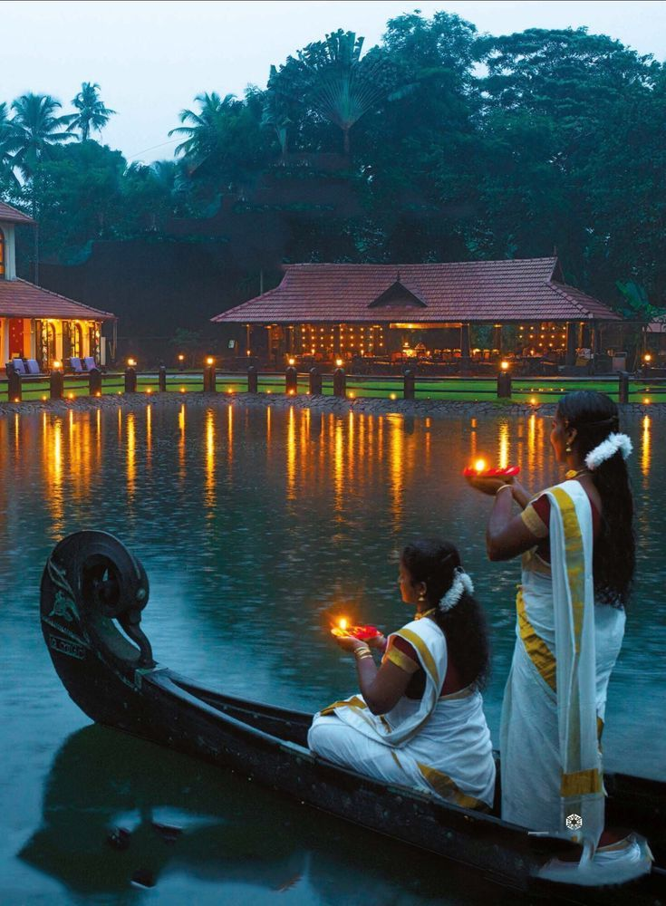
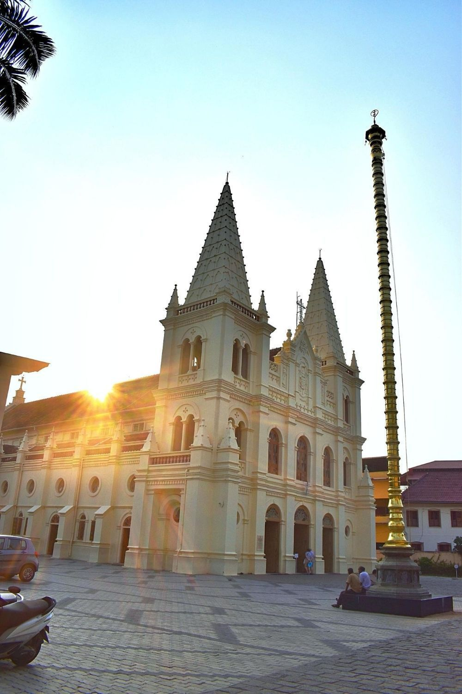
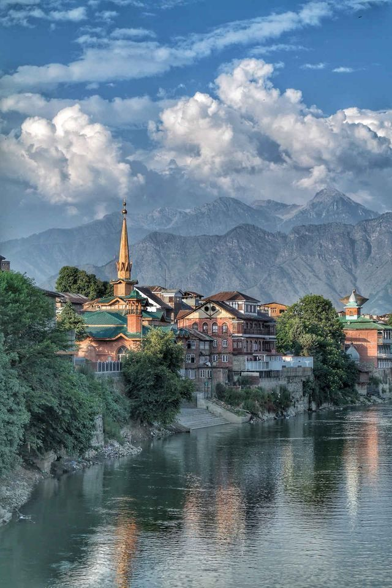
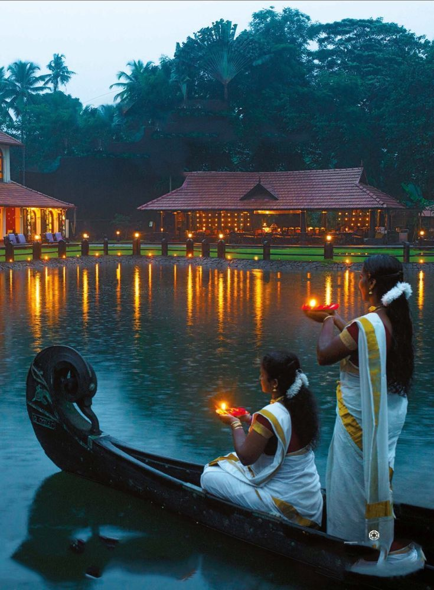
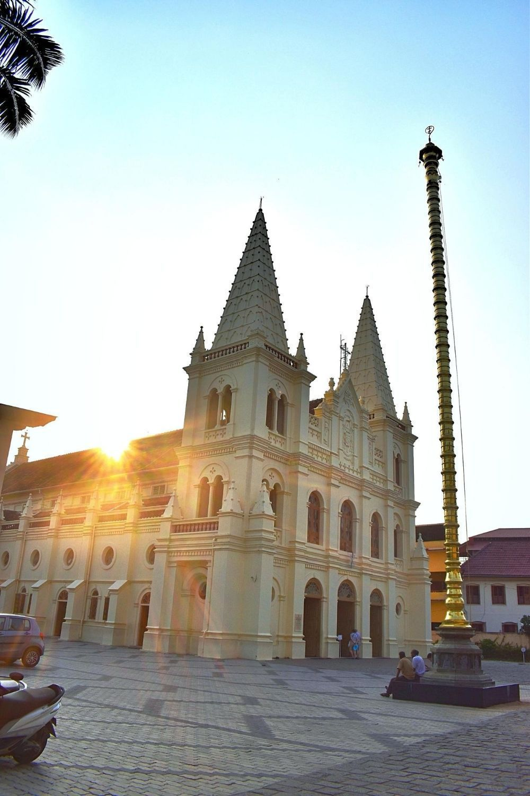
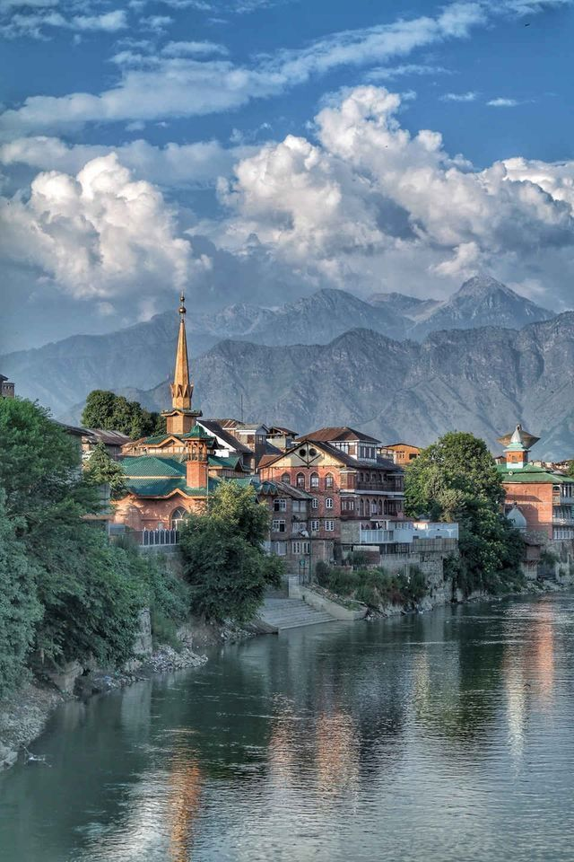

Kashmir is a state which is equally rich in cultural and natural wonders along with the myriad of history and political past that this state is home to.This state provides unique experiences to its tourists in the form of spicy native food along with a variety of teas, long walks or a jagged trekking experience on the many mountains in the region, marvelling at the cozy houseboats on the lakes of Srinagar and visiting the many pilgrimage sites, temples and religious and spiritual centres that are present throughout the state. If you love collecting souvenirs from the places you visit, then you can pick up the beautiful Pashmina silks, carpets and other textiles handcrafted by the native craftsmen in Kashmir
There is no exaggeration in Kerala’s status as ‘God’s own country’, for how else does one explain its gorgeous 600-kilometre stretch of undisturbed coastline skirting the Arabian Sea, the palm-fringed beaches, a network of languid backwaters home to a vibrant rural life, the misty tea-covered Western Ghats, wildlife reserves teeming with endemic flora and fauna and spice plantations running rampant on its valleys and hill slopes. One of the country’s cleanest states, and perhaps the friendliest too, it is an absolute delight travelling around, visiting the historical temples and museums in Trivandrum, getting a slice of the maritime history in Cochin (Kochi) or taking a boat ride to islands like Mattancherry to trace its Jewish roots.
Kochi's appeal spans history, geography and commerce in equal measure. A heady concoction that has drawn travelers of all ilk! It is Keralaâs genuine melting pot. Travelers with a yen for history and heritage will find Fort Kochi and Mattancherry engrossing. The cityâs physical geography encompassing islands, lakes, lagoons, canals, estuaries, the sea and the mainland, makes for a seamless fusion between land and water.
Srinagar is built on both sides of the river, Jhelum. The old city has quite a different character to the wide spaces of the parks and boulevards and gives expression to the phrase âcheek by jowlâ; this part of the city with narrow streets and houses of exposed brick and elaborate timberwork â which includes half a dozen old bridges â is also the area where many craftsmen live and work; this includes most, if not all of the cityâs copper workers.Srinagar, the summer seat of the government of the state of Jammu and Kashmir has long been one of Indiaâs most popular tourist destinations. In part, this has had to do with the multi-layered character of the city and its several attractions.